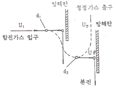
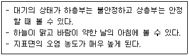
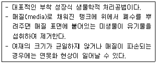
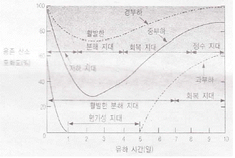
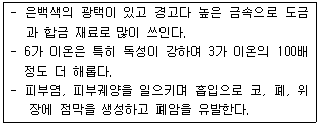
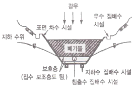
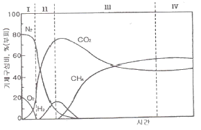
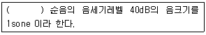

환경기능사 (2012-10-20 기출문제)
1과목: 대기오염방지
1. 연료의 연소시 공기비가 클 경우에 나타나는 현상으로 가장 거리가 먼 것은?
- 연소실내의 온도가 낮아짐
- 배기가스 중 NOx양 증가
- 배기가스에 의한 열손실의 증대
- 불완전 연소에 의한 매연 증대
(정답률: 54%)

2. 원심력 집진장치에 관한 설명으로 옳지 않은 것은?
- 처리기능 입자는 3~100㎛이며, 저효율 집진장치 중 집진율이 우수하고, 경제적인 이유로 전처리 장치로 많이 사용된다.
- 설치비와 유지비가 저렴한 편이다.
- 점착성이나 딱딱한 입자가 함유된 배출가스에 적합하다.
- 블로우 다운 효과와 관련이 있다.
(정답률: 60%)
3. 다음 그림과 같이 집진원리를 갖는 집진장치는?

- 중력집진장치
- 관성력집진장치
- 전기집진장치
- 음파집진장치
(정답률: 90%)
4. 후드의 설치 및 흡인요령으로 가장 적합한 것은?
- 후드를 발생원에 근접시켜 흡인시킨다.
- 후드의 개구면적을 점차적으로 크게 하여 흡인속도에 변화를 준다.
- 에어커텐(air curtain)은 제거하고 행한다.
- 배풍기(blower)의 여유량은 두지 않고 행한다.
(정답률: 76%)
5. 다음 중 집진장치에 관한 설명으로 옳은 것은?
- 사이클론은 여과식 집진장치에 해당한다.
- 중력 집진장치는 고효율 집진장치에 해당한다.
- 여과 집진장치는 수분이 많은 점착성의 먼지처리에 적합하다.
- 전기 집진장치는 코로나 방전을 이용하여 집진하는 장치이다.
(정답률: 82%)
6. 다음과 같은 특성을 지닌 굴뚝 연기의 모양은?

- 환상형
- 원추형
- 훈증형
- 구속형
(정답률: 70%)
7. 황(S)함량이 2.0%인 중유를 시간당 5ton으로 연소시킨다. 배출가스 중의 SO2를 CaCO3로 완전히 흡수시킬 때 필요한 CaCO3의 양을 구하면? (단, 중유중의 황성분은 전량 SO2로 연소된다.)
- 278.3 kg/hr
- 312.5 kg/hr
- 351.7 kg/hr
- 379.3 kg/hr
(정답률: 51%)
8. 다음 집진장치 중 일반적으로 동력비가 가장 적게 드는 것은?
- 벤츄리 스크러버
- 사이클론
- 살수탑
- 중력 집진장치
(정답률: 73%)
9. 다음 중 선택적인 촉매환원법으로 질소산화물을 처리할 때 사용되는 환원제로 가장 적합한 것은?
- 수산화칼슘
- 암모니아
- 염화수소
- 불화수소
(정답률: 50%)
10. 황록색의 유독한 기체로 물에 잘 녹으며 강한 자극성이 있는 기체는?
- CI2
- NH3
- CO2
- CH4
(정답률: 60%)
11. 세정집진장치는 유수식, 가압수식, 회전식으로 분류될 수 있는데, 다음 중 유수식의 분류에 해당되는 것은?
- 분수형
- 벤츄리 스크러버
- 충전탑
- 분무탑
(정답률: 50%)
12. 중력 집진장치의 효율을 향상시키는 조건으로 거리가 먼 것은?
- 침강실 내의 배기가스의 기류는 균일해야한다.
- 침강실의 높이가 높고, 길이가 짧을수록 집진율이 높아진다.
- 침강실 내의 처리가스 유속이 작을수록 미립자가 포집된다.
- 침강실의 입구폭이 클수록 미세입자가 포집된다.
(정답률: 78%)
13. 원형 송풍관의 길이가 10m, 내경이 300mm, 직관 내 속도압이 15mmH2O, 철판의 관마찰계수가 0.004일 때 이 송풍관의 압력손실은?
- 1 mmH2O
- 4 mmH2O
- 8 mmH2O
- 18 mmH2O
(정답률: 48%)
14. 실제공기량(A)을 바르게 나타낸 식은? (단, Ao : 이론공기량, m : 공기비, m > 1)
- A=mAo
- A=(m+1)Ao
- A=(m-1)Ao
- A=Ao/m
(정답률: 64%)
15. 섭씨온도 25℃는 절대온도로 몇 K 인가?
- 25K
- 45K
- 273K
- 298K
(정답률: 74%)
2과목: 폐수처리
16. 다음 중 폐수를 응집침전으로 처리할 때 영향을 주는 주요인자와 가장 거리가 먼 것은?
- 수온
- pH
- DO
- Colloid의 종류와 농도
(정답률: 64%)
17. 다음 중 생물학적 방법으로 가장 적합하게 처리할 수 있는 오염물질은?
- 중금속
- 유기물
- 방사능
- 시안 화합물
(정답률: 75%)
18. <보기>와 같은 특성을 가지는 생물학적 폐수처리 방법은?

- 회전원판법
- 살수여상법
- 활성슬러지법
- 산화지
(정답률: 80%)
19. A공장폐수의 최종 BOD 값이 200 mg/L이고, 탈산소계수(K)가 0.2/day 일 때, BOD5 값은? (단, BOD 소비식은 Y= L0(1-10-Kl 을 이용할 것)
- 90mg/L
- 120mg/L
- 150mg/L
- 180mg/L
(정답률: 38%)
20. 물 분자의 화학적 구조에 관한 설명으로 옳지 않은 것은?
- 물 분자는 1개의 산소 원자와 2개의 수소 원자가 공유 결합하고 있다.
- 물 분자에는 2개의 고립 전자쌍이 산소 원자에 남아 있다.
- 산소는 전기 음성도가 매우 커서 공유 결합을 하고 있으나 극성을 갖지는 않는다.
- 물 분자의 산소는 음성 전하를 가지며, 수소는 양성 전하를 가지고 있어 인접한 분자 사이에 수소 결합을 하고 있다.
(정답률: 66%)
21. 다음 중 물리적 예비처리공정으로 볼 수 없는 것은?
- 스크린
- 침사지
- 유량조정조
- 소화조
(정답률: 50%)
22. 다음 중 수질오염공정시험기준에 의거 페놀류를 측정하기 위한 시료의 보존방법(①)과 최대보존기간(②)으로 가장 적합한 것은?
- ① 현장에서 용존산소 고정 후 어두운 곳 보관, ② 8시간
- ① 즉시 여괴 후 4℃ 보관, ② 48시간
- ① 20℃ 보관, ② 즉시 측정
- ① 4℃보관, H3PO4로 pH 4 이하 조정한 후 CuSO4 1g/L 첨가, ② 28일
(정답률: 75%)
23. 0.00001M HCI 용액의 pH는 얼마인가? (단, HCI은 100% 이온화 한다.)
- 2
- 3
- 4
- 5
(정답률: 47%)
24. 활성슬러지공법을 적용하고 있는 폐수종말처리시설에서 운전상 발생하는 문제점에 관한 설명으로 옳지 않은 것은?
- 슬러지 팽화는 플록의 침전성이 불량하여 농축이 잘 되지 않는 것을 말한다.
- 슬러지 팽화의 원인 대부분은 각종 환경조건이 악화된 상태에서 사상성 박테리아나 균류 등의 성장이 둔화되기 떄문이다.
- 포기조에서 암갈색의 거품은 미생물 체류시간이 길고 과도한 과포기를 할 때 주로 발생한다.
- 침전성이 좋은 슬러지가 떠오르는 슬러지 부상문제는 주로 과포기나 저부하에 의해 포기조에서 상당한 질산화가 진해오디는 경우 침전조에서 침전슬러지를 오래 방치할 때 탈질이 진행되어 야기된다.
(정답률: 53%)
25. 다음 중 콜로이드 물질의 크기 범위로 가장 적합한 것은?
- 0.001 ~ 1㎛
- 10 ~ 50㎛
- 100 ~ 1000㎛
- 1000 ~ 10000㎛
(정답률: 70%)
26. 다음 폐수처리법 중 입자의 고액분리 방법과 가장 거리가 먼 것은?
- 전기투석
- 부상분리
- 침전
- 침사지
(정답률: 67%)
27. 우리나라 강수량 분포의 특성으로 가장 거리가 먼 것은?
- 월별 강수량 차이가 큰 편이다.
- 하천수에 대한 의존량이 큰 편이다.
- 6월과 9월 사이에 연 강수량의 약 2/3 정도가 집중되는 경향이 있다.
- 세계 평균과 비교 시 연간 총 강수량은 낮으나, 인구 1인당 가용수량은 높다.
(정답률: 79%)
28. 다음 중 수중의 알칼리도를 ppm 단위로 나타낼 때 기준이 되는 물질은?
- Ca(OH)2
- CH3OH
- CaCO3
- HCI
(정답률: 65%)
29. 식품공장페수를 200배 희석하여 측정한 DO는 8.6mg/L 이었고, 5일 동안 배양한 후 DO는 4.2mg/L 이었다. 이 폐수의 생물화학적 산소요구량은?
- 750mg/L
- 785mg/L
- 880mg/L
- 915mg/L
(정답률: 50%)
30. 다음 중 수질오염공정시험기준에 따른 총질소 분석방법에 해당하는 것은?
- 굴절법
- 당도법
- 전기전도도법
- 자외선/가시선 분광법
(정답률: 69%)
31. 0.04M NaOH 용액을 mg/L로 환산하면?
- 1.6mg/L
- 16mg/L
- 160mg/L
- 1600mg/L
(정답률: 45%)
32. 아래 그래프는 자정단계에 따른 용존산소의 변화량을 타나낸 것이다. 이에 관한 설명으로 옳지 않은 것은?

- 저하지대는 오염물질의 유입으로 수질이 저하되어 오염에 약한 고등생물은 오염에 강한 미생물로 교체된다.
- 활발한 분해지대는 용존산소가 가장 높아 활발한 분해가 일어나는 상태에 도달되고, 호기성 세균의 번식이 활발하다.
- 회복지대는 수질이 점차 깨끗해지며, 기포의 발생이 감소하는 등 분해지대와는 반대 현상이 장거리에 걸쳐 발생한다.
- 정수지대는 마치 오염되지 않은 자연수처럼 보이며, 용존산소 농도가 증가하여 오염되지 않은 자연 수계에서 살 수 있는 식물이나 동물이 번식한다.
(정답률: 67%)
33. 지하수를 사용하기 위해 수질 분석을 하였더니 칼슘이온 농도가 40mg/L이고, 마그네슘이온 농도가 36mg/L이었다. 이 지하수의 총경도(as CaCO3)는?
- 16mg/L
- 76mg/L
- 120mg/L
- 250mg/L
(정답률: 31%)
34. <보기>와 같은 특성을 가지는 수질오염물질은?

- 크롬
- 구리
- 수은
- 카드뮴
(정답률: 74%)
35. 다음 용어 중 흡착과 가장 관련이 깊은 것은?
- 도플러효과
- VAL
- 플랑크상수
- 프로인들리히의 식
(정답률: 68%)
3과목: 폐기물처리
36. 폐기물 파쇄의 목적으로 옳지 않은 것은?
- 용적의 감소
- 임경분포의 균일화
- 겉보기 밀도의 감소
- 매립 시 부등침하 억제효과
(정답률: 70%)
37. 소형차량으로 수거한 쓰레기를 대형차량으로 옮겨 운반하기 위해 마련하는 적환장의 위치로 적합하지 않은 곳은?
- 주요 간선도로에 인접한 곳
- 수송 측면에서 가장 경제적인 곳
- 공중위생 및 환경피해가 최소인 곳
- 가능한 한 수거지역에서 멀리 떨어진 곳
(정답률: 79%)
38. 유동상 소각로에서 유동상의 매질이 갖추어야 할 조건이 아닌 것은?
- 불활성
- 낮은 융점
- 내마모성
- 작은 비중
(정답률: 59%)
39. 강열감량 및 유기물함량-중량법에 관한 설명으로 옳지 않은 것은?
- 시료를 황산암모늄용액(5%)을 넣고 가열하여 탄화시킨다.
- 시료에 시약을 넣고 가열하여 탄화 후 (600 ± 25) ℃의 전기로 안에서 3시간 강열한 다음 데시케이터에서 식힌 후 무게를 단다.
- 평량병 또는 증발접시는 백금제, 석영제 또는 사기제 도가니 또는 접시로 가급적 무게가 적은 것을 사용한다.
- 데시케이터는 실리카겔과 염화칼슘이 담겨 있는 것을 사용한다.
(정답률: 43%)
40. 쓰레기 수거노선을 설정하는데 유의하여야 할 사항으로 옳지 않은 것은?
- U자형 회전을 피해 수거한다.
- 될 수 있는 한 한번 간 길은 다시 가지 않는다.
- 가능한 한 시계반대방향으로 수거노선을 정한다.
- 출발점은 차고지와 가깝게 하고 수거된 마지막 컨테이너는 처분장과 가깝도록 배치한다.
(정답률: 75%)
41. A폐기물의 성분을 분석한 결과 가연성 물질의 함유율이 무게기준으로 50% 이었다. 밀도가 700kg/m3인 A폐기물 10m3에 포한된 가연성 물질의 양은?
- 500kg
- 1500kg
- 2500kg
- 3500kg
(정답률: 48%)
42. 폐기물 처리시 에너지를 회수 또는 재활용 할 수 있는 처리법으로 가장 거리가 먼 것은?
- 표준활성처리
- 열분해
- 발효
- RDF
(정답률: 43%)
43. 습식산화법의 일종으로 슬러지에 통상 200~270℃ 정도의 온도와 70atm 정도의 압력을 가하여 산소에 의해 유기물을 화학적으로 산화시키는 공법은?
- 짐머만(Zimmerman) 공법
- 유동산화(Fluidized oxidation) 공법
- 내산화(Inter oxidation) 공법
- 포졸란(Pozzolan) 공법
(정답률: 75%)
44. 밑면을 개방할 수 있는 바지선에 폐기물을 적재하여 대상지점에 투하하는 방식으로 내수배제가 곤란하고 수심이 깊은 지역 등에 적합한 해안매립공법은?
- 도랑식공법
- 셀공법
- 샌드위치공법
- 박충뿌림공법
(정답률: 73%)
45. 아래 그림과 같은 차수시설에 관한 설명으로 옳지 않은 것은?

- 매립지의 침출수 유출을 방지한다.
- 지하수가 매립지 내부로 유입하는 것을 방지한다.
- 매립지 내에서의 물의 이동은 헨리법칙으로 나타낸다.
- 투수 방지를 위해 불투수성 차수막 또는 점토를 사용한다.
(정답률: 61%)
46. 다음 그림은 폐기물을 매립한 후 발생하는 생성가스의 농도 변화를 단계적으로 나타낸 것이다. 유기물이 효소에 의해 발효되는 “혐기성 비메탄” 단계는?

- Ⅰ단계
- Ⅱ단계
- Ⅲ단계
- Ⅳ단계
(정답률: 76%)
47. 매립지의 폐기물에 포함된 수분, 매립지에 유입되는 빗물에 의해 발생하는 침출수의 유출 방지와 매립지 내부로의 지하수 유입을 방지하기 위하여 설치하는 것은?
- 차수시설
- 복토시설
- 다짐시설
- 회수시설
(정답률: 73%)
48. 폐기물의 초기 무게가 250g이고 건조 후 폐기물의 무게가 200g이라면 이 때 수분함량(%)은?
- 15%
- 20%
- 25%
- 30%
(정답률: 55%)
49. 매립시설에서 복토의 목적으로 가장 거리가 먼 것은?
- 빗물 배제
- 화재 방지
- 식물 성장 방지
- 폐기물의 비산방지
(정답률: 77%)
50. 화격자 소각로의 소각 능률이 220kg/m2ㆍhr이고 80000kg의 폐기물을 1일 8시간 소각한다면 이 때 화격자의 면적은?
- 41.6m2
- 45.5m2
- 49.7m2
- 54.6m2
(정답률: 45%)
51. 유해폐기물을 “무기적 고형화” 에 의한 처리방법에 관한 특성비교로 옳지 않은 것은? (단, 유기적 고형화 방법과 비교)
- 고도의 기술이 필요하며, 촉매 등 유해물질이 사용된다.
- 수용성이 작고, 수밀성이 양호하다.
- 고화재료 구입이 용이하며, 재료가 무독성이다.
- 상온, 상압에서 처리가 용이하다.
(정답률: 45%)
52. 다음 중 효율적인 파쇄를 위해 파쇄대상물에 작용하는 3가지 힘에 해당되지 않는 것은?
- 충격력
- 정전력
- 전단력
- 압축력
(정답률: 76%)
53. 폐기물관리법령상 지정폐기물 중 부식성폐기물의 “폐산” 기준으로 옳은 것은?
- 액체상태의 폐기물로서 수소이온 농도지수가 2.0 이하인 것으로 한정한다.
- 액체상태의 폐기물로서 수소이온 농도지수가 3.0 이하인 것으로 한정한다.
- 액체상태의 폐기물로서 수소이온 농도지수가 5.0 이하인 것으로 한정한다.
- 액체상태의 폐기물로서 수소이온 농도지수가 5.5 이하인 것으로 한정한다.
(정답률: 61%)
54. 하수처리장에서 발생하는 슬러지를 혐기성으로 소화처리하는 목적으로 가장 거리가 먼 것은?
- 병원균의 사멸
- 독성 중금속 및 무기물의 제거
- 무게와 부피감소
- 메탄과 같은 부산물 회수
(정답률: 53%)
55. 다음 중 퇴비화의 최적조건으로 가장 적합한 것은?
- 수분 50 ~ 60%. pH 5.5 ~ 8 정도
- 수분 50 ~ 60%. pH 8.5 ~ 10 정도
- 수분 80 ~ 85%. pH 5.5 ~ 8 정도
- 수분 80 ~ 85%. pH 8.5 ~ 10 정도
(정답률: 68%)
4과목: 소음 진동학
56. 음향파워가 0.1watt일 때 PWL은?
- 1dB
- 10dB
- 100dB
- 110dB
(정답률: 43%)
57. 점음원에서 10m 떨어진 곳에서의 음압레벨이 100dB일 때, 이 음원으로부터 20m 떨어진 곳의 음압레벨은?
- 92dB
- 94dB
- 102dB
- 104dB
(정답률: 60%)
58. 방음대책을 음원대책과 전파경로대책으로 분류할 때, 다음 중 주로 전파경로대책에 해당하는 것은?
- 방음벽 설치
- 소음기 설치
- 발생원의 유속저감
- 발생원의 공명방지
(정답률: 63%)
59. 다음은 음의 크기에 관한 설명이다. ( )안에 알밪은 것은?

- 10 Hz
- 100 Hz
- 1000 Hz
- 10000 Hz
(정답률: 61%)
60. 다음 중 다공질 흡음재에 해당하지 않는 것은?
- 암면
- 비닐시트
- 유리솜
- 폴리우레탄폼
(정답률: 76%)